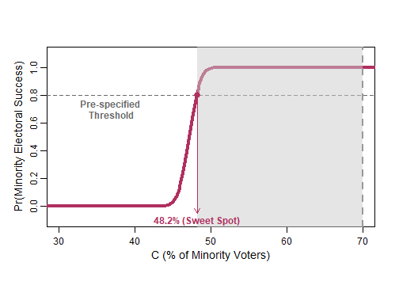

Application 5: finding a scenario's sweet spot
Motivating example: a sufficient minority share (Online Appendix C.3)
A 50% chance of electing a minority candidate and near certainty are different targets. Online Appendix C.3 of Atsusaka (2021) assumes all minority voters support the minority candidate, 30% of White voters do so, and minority and White turnout rates are 40% and 50%, respectively. On the package’s 0.1-point grid, the prediction first reaches 50% at a minority share of 47.6%; at 57%, it is approximately 100% at numerical precision.
appendix_C <- seq(from = 1, to = 100, by = 0.1)
appendix_plan <- sim_redistrict(
coethnic = 1, crossover = 0.3, gap = c(0.4, 0.5)
)
appendix_C[which(appendix_plan >= 0.5)[1]]
#> [1] 47.6
appendix_plan[which.min(abs(appendix_C - 57))]
#> [1] 1This is conditional near certainty, rather than an electoral
guarantee. plot_sweetspot() identifies the share needed for
a chosen threshold; C.prime marks the district
being compared with that threshold. Comparisons of district plans do not
by themselves establish legal vote dilution.
Plotting a chosen threshold
The sweet spot is the first minority electorate percentage at which a
simulated scenario reaches a chosen probability threshold. Use
plot_sweetspot() to display it alongside a district of
interest.
plan <- sim_redistrict(coethnic = 0.9, crossover = 0.2)
plot_sweetspot(
plan = plan,
threshold = 0.8,
range = c(30, 70),
C.prime = 70
)
threshold is a probability from 0 to 1.
C.prime marks the minority electorate percentage for a
district of interest and must be within the plotted range.
If it is below the sweet spot, the plot represents a shortfall from the
chosen threshold; if it is above, it represents a surplus. Omitting
C.prime places it at the calculated sweet spot.
The sweet spot is conditional on the plan and the voting assumptions
supplied to sim_redistrict(). It is therefore a comparison
tool, rather than a universal electoral threshold.